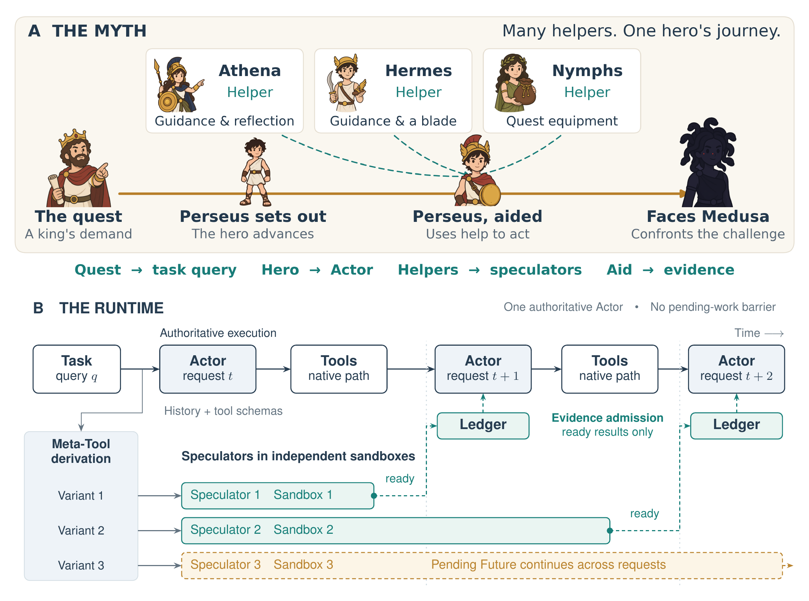
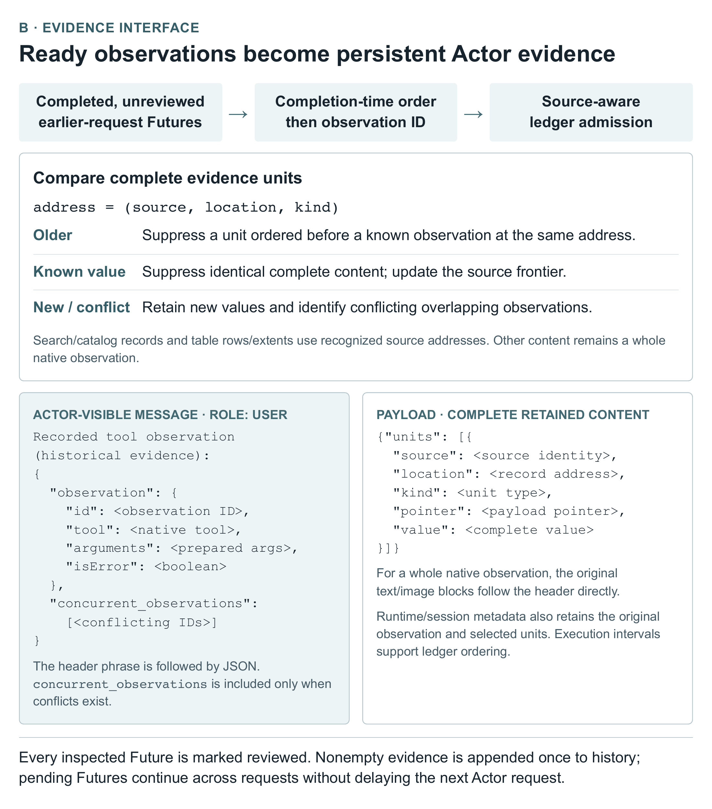
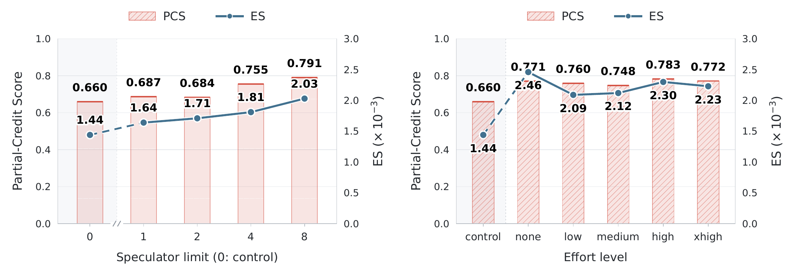
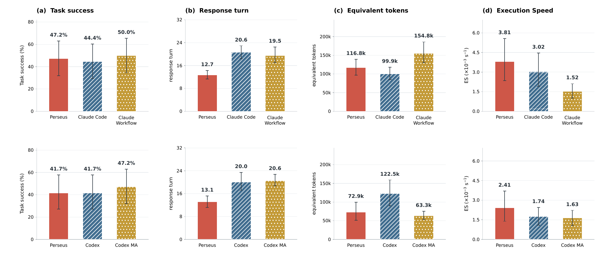
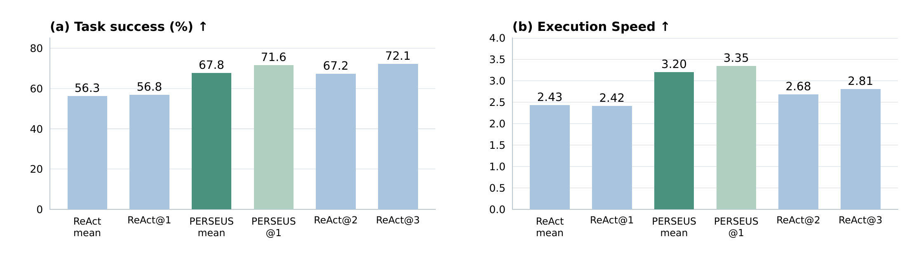
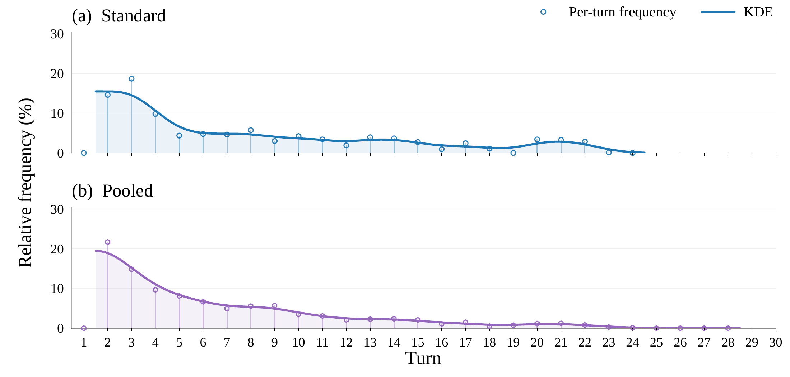
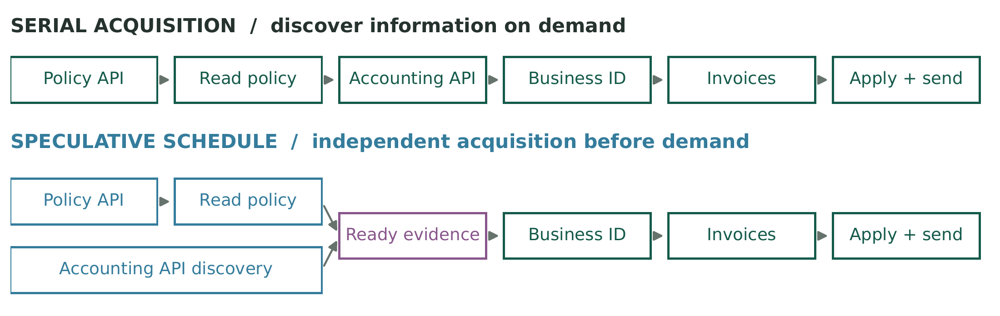
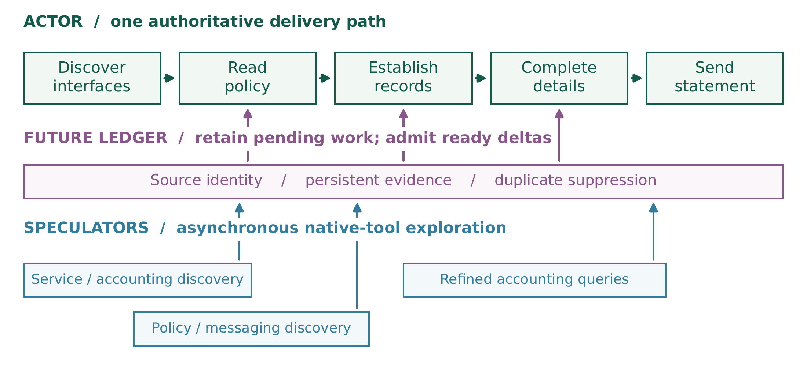
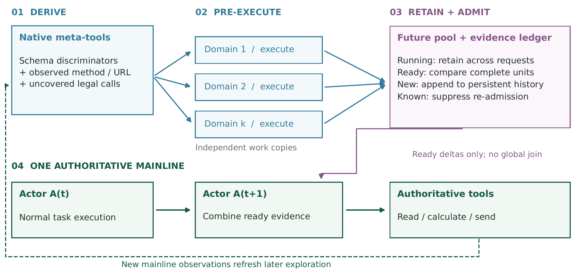

Derive domains
Declared schema values and successful authoritative invocation heads define ordered, disjoint domains. A complement covers remaining legal calls; no discriminator means the original schema.
I / The summons
One hero. A widening horizon.
Follow the path from the king’s demand to the Gorgon’s shadow.
One Actor carries the task, the decisions, and the authoritative state.
Begin the journey ↓Research manuscript · Under review at ICLR 2027
II / Beyond the shore
Each step opens one part of the world, while the coast beyond it remains unseen.
The Actor keeps moving. Independent exploration opens the horizon beside it.
Read the compass →III / A chart for the unknown
Before the next crossing, the horizon becomes a chart of distinct directions rather than a single guess.
Meta-Tools give exploration disjoint argument domains, while native schemas validate each complete call.
Study the domains →IV / Divine aid
Athena and Hermes offer guidance, and the nymphs bring the equipment that lets Perseus continue toward Medusa.
One single-round Speculator per eligible domain. Each proposed action runs in its own independent copy.
Read the protocol →V / Across the sea
Perseus crosses onward as far-off lights continue their own passage through the dusk.
Persistent Futures cross request boundaries. Pending work keeps moving without a join barrier.
Open the moving ledger →VI / The shield’s reflection
At the Gorgon’s threshold, the shield offers Perseus a way to see without meeting the fatal gaze.
The ledger admits older ready evidence at the next Actor boundary, preserving provenance and conflicts.
Look through the mirror →VII / Before the Gorgon
The helpers have widened his possibilities; the decisive act still falls to Perseus.
Exploration informs; the Actor acts. The recorded finance:4073 episode receives official score 1.0.
Read the statement quest →VIII / The temple of evidence
At the summit, the journey becomes a record of what was achieved and what remains beyond its reach.
183 selected tasks · three runs each. Task success: 56.3% → 67.8%. The chronicle records the gains, costs and limits.
Enter the chronicle →Scientific material, original figures and reported results. Manuscript under review; no full PDF or LaTeX source is distributed.
THE METHOD
PERSEUS is a training-free protocol around a native Actor. It distributes acquisition, isolates execution and admits evidence when ready.
Declared schema values and successful authoritative invocation heads define ordered, disjoint domains. A complement covers remaining legal calls; no discriminator means the original schema.
Initial and subsequent genuine user input, or new authoritative observations, advance a revision. One Speculator per eligible variant joins the Actor (n+1), with no default width cap. Each domain launches at most once per revision; evidence admission alone does not renew it.
Each Speculator has one generation round. Every complete validated call can start immediately, in its own work copy. Tool results do not create an inner model loop.
Canonical in-flight calls share execution. Completed calls can be reused at the same revision and refreshed after progress. At a later Actor boundary, the ledger admits older ready observations once into persistent history; pending work stays live.

Preserve the native schema and arguments. Ordered exclusions make domains disjoint; opaque shell text is not heuristically split.
Results include arguments, error status and copy identity. The ledger handles source-qualified duplicates and old values while retaining conflicts and complete opaque outputs.
Only ready results from older requests are inspected. Termination cancels pending work and settles cleanup; epoch changes reject late publication.
Dᵢ = {u ∈ S_T : Pᵢ(u) ∧ ¬P₁(u) ∧ … ∧ ¬Pᵢ₋₁(u)}Drest = S_T ∖ ⋃DᵢRₜ = {f : origin(f) < t, ready(f), ¬reviewed(f)}
A WAVE IN MOTION
Watch one wave unfold automatically across Actor boundaries. This is a logical animation, not a live agent run or a measured replay. Three branches illustrate one selected wave; later waves are omitted.
24 seconds of narrative motion · not execution time. Ready is not admitted; only the Actor commits.
At request t, one Actor continues native work while three constrained Speculators propose independent acquisitions. This view tracks just this wave.
A catalog inspection completes while the Actor is still working. Ready does not mean immediately admitted into the same originating request.
At t+1, the ledger admits the older ready catalog observation with copy provenance. The policy inspection and diagnostic remain pending; the Actor starts without joining them.
A second acquisition completes between boundaries. Its result contains a known catalog entry and new policy information. The slow Future is still alive.
At t+2, source-aware admission adds the new policy and suppresses the recognized catalog duplicate. The Actor can use that evidence for a different action; no speculative copy is merged.
The Actor owns completion. Remaining pending work is cancelled and cleanup is settled. New authoritative progress can create later waves, but evidence admission alone cannot.
REPORTED RESULTS
Four selected long-horizon benchmarks, 183 tasks and three attempts per task. The main experiments use GPT-5.6 Terra as Actor and GPT-5.6 Luna as Speculator, both at high effort, with 50 Actor turns or 1800 seconds per run.
Highest overall task success among the 13 evaluated baselines. Execution Speed is success divided by execution time, not a raw throughput claim; MemGPT (3.44) and SA (3.24) have higher overall ES.
| Method | Auto · 36 | τ² · 60 | Term · 31 | GAIA · 56 | Overall · 183 |
|---|---|---|---|---|---|
| ReAct | 27.8 ±2.8 | 66.7 ±5.0 | 69.9 ±4.9 | 56.0 ±6.3 | 56.3 |
| Plan-and-Execute | 14.8 ±1.6 | 71.7 ±7.6 | 72.0 ±3.7 | 48.2 ±3.1 | 53.4 |
| ReWOO | 0.9 ±1.6 | 53.3 ±7.3 | 25.8 ±11.6 | 34.5 ±6.3 | 32.6 |
| Multi-Persona | 16.7 ±5.6 | 68.3 ±5.0 | 68.8 ±4.9 | 31.0 ±1.0 | 46.8 |
| CMAS | 15.7 ±4.2 | 71.7 ±4.4 | 63.4 ±6.7 | 55.4 ±9.9 | 54.3 |
| DyLAN | 23.1 ±1.6 | 52.2 ±5.4 | 58.1 ±5.6 | 41.7 ±4.1 | 44.3 |
| MemGPT | 25.9 ±5.8 | 65.6 ±1.0 | 69.9 ±4.9 | 48.2 ±6.4 | 53.2 |
| LLMCompiler | 4.6 ±1.6 | 56.1 ±2.5 | 22.6 ±6.5 | 31.5 ±4.1 | 32.8 |
| AFlow | 23.1 ±5.8 | 67.8 ±2.5 | 75.3 ±1.9 | 41.1 ±9.9 | 52.1 |
| Magentic-One | 7.4 ±3.2 | 68.3 ±3.3 | 43.0 ±6.7 | 44.6 ±0.0 | 44.8 |
| DMAS | 20.4 ±1.6 | 73.3 ±3.3 | 78.5 ±1.9 | 41.1 ±1.8 | 53.9 |
| SA | 17.6 ±7.0 | 73.3 ±4.4 | 66.7 ±1.9 | 54.2 ±3.7 | 55.4 |
| AsyncFC | 27.8 ±12.7 | 65.6 ±7.9 | 65.6 ±12.2 | 58.3 ±4.1 | 55.9 |
| PERSEUS | 39.8 ±1.6 | 77.8 ±2.6 | 81.7 ±4.9 | 67.3 ±6.3 | 67.8 |
Overall pools by task count. Rows show manuscript values at reported precision. This is the paper’s model setup, not a fresh benchmark of the Codex or DSH adapters.
On 85 diagnostic cases with recurring speculative evidence, full PERSEUS has the highest TS, PCS and ES in the component study. More unrestricted auxiliary computation is not automatically useful.
| Configuration | TS (%) | PCS | ES | Turns | Time (s) | Tool (%) | Eq. Tokens(M) |
|---|---|---|---|---|---|---|---|
| w/o Meta-Tool Derivation | 47.1 ±10.2 | 0.660 | 1.79 | 10.60 ±1.32 | 263.5 ±63.1 | 96.8 | 14.56 |
| w/o Speculative Swarm | 52.9 ±5.9 | 0.660 | 1.70 | 12.03 ±3.42 | 311.2 ±35.6 | 96.2 | 6.14 |
| w/o Persistent Futures | 49.0 ±9.0 | 0.618 | 1.84 | 10.77 ±1.82 | 266.2 ±36.3 | 93.9 | 5.51 |
| Full PERSEUS | 56.9 ±9.0 | 0.825 | 2.30 | 9.96 ±4.88 | 247.1 ±21.6 | 97.2 | 9.57 |
TS is binary task success; PCS keeps native partial credit. Equivalent tokens use Actor-model price normalization. This subset is selected for recurring evidence activity.
A wider acquisition cap improves the tested operating point. Increasing reasoning effort is not monotonic: none has the highest tested ES, while high has the highest PCS in the effort sweep.

| Cap | PCS | ES (PCS/s) |
|---|---|---|
| 0 | 0.660 | 1.44 |
| 1 | 0.687 | 1.64 |
| 2 | 0.684 | 1.71 |
| 4 | 0.755 | 1.81 |
| 8 | 0.791 | 2.03 |
| S effort | PCS | ES (PCS/s) |
|---|---|---|
| control | 0.660 | 1.44 |
| none | 0.771 | 2.46 |
| low | 0.760 | 2.09 |
| medium | 0.748 | 2.12 |
| high | 0.783 | 2.30 |
| xhigh | 0.772 | 2.23 |
Within each model group, PERSEUS uses fewer response turns and has higher ES than the single-agent controls. Workflow controls reach higher TS, showing a quality–time trade-off.

| Model group / Method | TS (%) | Turns | Eq. Tokens(K) | ES |
|---|---|---|---|---|
| Opus 5 + Sonnet 5 / PERSEUS | 47.2 | 12.7 | 116.8 | 3.81 |
| Opus 5 + Sonnet 5 / Claude Code | 44.4 | 20.6 | 99.9 | 3.02 |
| Opus 5 + Sonnet 5 / Claude Workflow | 50.0 | 19.5 | 154.8 | 1.52 |
| GPT-5.6 Terra + GPT-5.6 Luna / PERSEUS | 41.7 | 13.1 | 72.9 | 2.41 |
| GPT-5.6 Terra + GPT-5.6 Luna / Codex | 41.7 | 20.0 | 122.5 | 1.74 |
| GPT-5.6 Terra + GPT-5.6 Luna / Codex MA | 47.2 | 20.6 | 63.3 | 1.63 |
These comparisons are manuscript experiments, not measurements of the newly packaged native harness plugins.
At 1.122× the pooled ReAct mean normalized usage, PERSEUS reaches 67.8% TS and ES 3.20. Best-of-n uses retrospective oracle selection; it is not a deployable verifier.

| Method | TS (%) | ES | Normalized budget |
|---|---|---|---|
| ReAct mean | 56.3 | 2.43 | 1.000 |
| ReAct@1 | 56.8 | 2.42 | 1.015 |
| PERSEUS mean | 67.8 | 3.20 | 1.122 |
| PERSEUS@1 | 71.6 | 3.35 | 1.122 |
| ReAct@2 | 67.2 | 2.68 | 2.000 |
| ReAct@3 | 72.1 | 2.81 | 3.000 |
Exploration has overhead. On 156 short BFCL cases, PERSEUS is slower and less accurate overall than ReAct: 75.64% at 14.38 seconds versus 78.85% at 8.34 seconds.
| Group / cases | PERSEUS | ReAct | CMAS | DMAS |
|---|---|---|---|---|
| Simple / 48 | 70.83 / 15.79 | 79.17 / 7.32 | 72.92 / 35.79 | 72.92 / 21.14 |
| Relevance / 36 | 80.56 / 9.77 | 72.22 / 6.62 | 80.56 / 32.90 | 77.78 / 21.32 |
| Static / 36 | 80.56 / 16.74 | 86.11 / 10.11 | 69.44 / 37.59 | 63.89 / 38.03 |
| Live / 36 | 72.22 / 14.76 | 77.78 / 9.64 | 61.11 / 26.75 | 55.56 / 29.10 |
| Overall / 156 | 75.64 / 14.38 | 78.85 / 8.34 | 71.15 / 33.45 | 67.95 / 26.92 |
Each cell reports strict accuracy (%) / mean execution time (s). Short paths have fewer later decisions that can reuse evidence. Main tasks are selected long-horizon cases; the results do not establish universal acceleration.
Across 549 runs, 493 contain evidence injection; manual review identifies later use in 162. Injections peak at turns 2–4. This descriptive continuity analysis is not a randomized causal estimate of usefulness.

FINANCE:4073
AutomationBench finance:4073 asks the Actor to send statements with unpaid invoices, balances and aging information while respecting distribution policy. Independent interface discovery can overlap; business-ID-dependent queries and delivery remain ordered.
Branches inspect policy, accounting and messaging interfaces in work copies.
The Wave invoice catalog record enters the ledger with its identity; repeated entries are suppressed.
The Actor establishes the business ID, then requests invoices and customer details.
The Actor encodes and sends the statement through Gmail. The recorded episode receives official score 1.0.



REFERENCE
The explanations and experiment values on this site are curated from the author-supplied manuscript. Figures are rendered from its original vector files, and the supplied character art is used unchanged.
@misc{perseus2026,
title = {PERSEUS: Non-Blocking Parallel Exploration
with a Speculative Swarm},
author = {{Anonymous authors}},
year = {2026},
note = {Under review at ICLR 2027}
}Perseus faces a demanding quest. Athena and Hermes guide him, and the nymphs supply equipment. Their aid makes his path possible while the journey remains his. The paper turns this asymmetry into an organization of computation.
The quest → task · Perseus → Actor · helpers → Speculators · aid → evidence
A king’s demand opens the quest.
One hero follows the task trajectory.
Helpers broaden what the hero can know and do.
Perseus integrates help into his own decisions.
The same hero carries the quest to its conclusion.
Guidance and reflection, including the shield-mediated view.
Guidance and a blade for the quest.
Winged sandals, the kibisis and the cap of Hades.
The cap of Hades belongs to the mythic equipment obtained from the nymphs. It is not a fourth hard-coded agent role.
Apollodorus, Library 2.4.2–3 ↗
The naming analogy is about cooperation under one authority. Runtime branches are native tool domains, not divine personas.
A single-agent loop keeps decisions coherent but discovers information mainly along issued calls. Delegation expands participation with added coordination. PERSEUS moves independent evidence acquisition alongside a continuing Actor.
Meta-Tool variants give different Speculators distinct acquisition scopes without an Actor-written subtask plan.
A copy can run inspections, diagnostics and temporary writes. Only the Actor changes authoritative task state.
Ready observations inform later reasoning. Pending work continues in Futures, without a collective join barrier.
Evidence may help an action different from the call that acquired it: an interface inspection can change which update the Actor chooses. The cooperation channel carries observations, not task ownership.